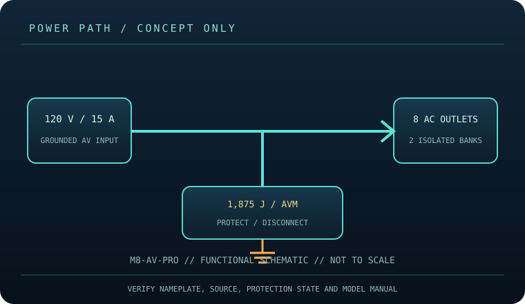

[ SURGE PROTECTIVE DEVICE // STATIC REFERENCE ]
Panamax MAX 8 AV-PRO
Eight AC outlets, 1,875 J and 65 kA peak impulse current listed; 120 V AV power management with AVM and Protect-or-Disconnect. This record describes the named model only; verify nameplate, region, revision, approvals and current manufacturer instructions before deployment.

SAFETY SCOPE: Surge protective devices do not provide outage runtime, guarantee protection from every event, repair defective grounding, or replace qualified electrical installation. Capacity and topology below are based on the cited product literature; where a value is not published, it is not guessed.
Model specifications and topology
| Manufacturer / exact model | Panamax M8-AV-PRO — named North American model; revisions and region-specific suffixes must be checked on the actual label. |
|---|---|
| Class / topology | AV power conditioner/protector with Protect-or-Disconnect surge response, Automatic Voltage Monitoring (AVM), and line filtering. Manufacturer literature identifies AC, coax and telephone/data line paths. No energy storage: this is not an UPS. |
| Electrical capacity | 120 V AC, 15 A maximum (1,800 W), 50/60 Hz; eight AC outlets across two isolated banks. The 15 A total load limit is shared by all connected equipment; the unit does not provide additional branch-circuit capacity. |
| Surge rating | Panamax lists 1,875 J single-pulse energy dissipation and 65,000 A peak impulse current for the M8-AV-PRO. These transient ratings are not continuous-load ratings. The full system remains limited by the device nameplate and branch circuit. |
| Outlets / connection interface | Eight AC outlets in two isolated banks; manufacturer literature lists coaxial, telephone/LAN (RJ-45) protection and a 12 V DC trigger for outlets 5–8. Confirm jack and trigger labels on the actual revision and use each path only as specified in its manual. |
| Compatibility | For compatible grounded 120 V AV components within the 15 A / 1,800 W total rating and the branch-circuit limit. AVM and disconnect functions can interrupt power during abnormal voltage or surge conditions. Coax/telephone/LAN protection only applies when lines are correctly routed through matching labeled ports. |
| Battery / runtime | No battery or stored-energy runtime. This product cannot ride through an outage; connected loads lose power when the source or device disconnects. |
| Monitoring / lifecycle | Use only the model’s labeled indicators, alarm, breaker or status display. These features are not proof of building-ground integrity; check manufacturer replacement/failure instructions. |
| Installation / revision control | Read the full model-specific manual and nameplate before installation. Match voltage, phase, current, connector, signal-line type, enclosure rating, revision and approvals; similar product-family names are not evidence of interchangeability. |
Compatibility and application
For compatible grounded 120 V AV components within the 15 A / 1,800 W total rating and the branch-circuit limit. AVM and disconnect functions can interrupt power during abnormal voltage or surge conditions. Coax/telephone/LAN protection only applies when lines are correctly routed through matching labeled ports.
AV power conditioner/protector with Protect-or-Disconnect surge response, Automatic Voltage Monitoring (AVM), and line filtering. Manufacturer literature identifies AC, coax and telephone/data line paths. No energy storage: this is not an UPS.
Confirm the equipment input-voltage range, connector type, circuit capacity and signal path from both equipment manuals. A higher joule number does not increase the permissible connected load and does not, by itself, define clamping behavior or protection lifetime.
Safety, inspection and limits
- Use only with a correctly grounded supply; never exceed its marked load or use a 240 V source. Do not daisy-chain power products. Secure the unit with unobstructed ventilation, keep it dry, and stop use for odor, heat, arcing or cord damage. Follow Panamax procedures for grounding and signal-line connections.
- Use indicators and manual troubleshooting to identify faults; protection features do not eliminate risk or certify building wiring. Disconnect before cleaning or moving and do not remove covers. No battery exists to replace and no outage runtime is provided.
- Surge protection reduces specified transient exposure but cannot guarantee equipment survival from lightning, wiring faults, sustained overvoltage or every conducted path. Follow the model manual and applicable electrical code.
Manufacturer sources and safety references
- Panamax — M8-AV-PRO product pageManufacturer specification and feature listing for this named AV power protector.
- Panamax — M8-AV-PRO owner’s manual (PDF)Model-specific wiring, use, and safety instructions.
- NFPA — NFPA 70 (National Electrical Code)Electrical installation and grounding requirements depend on the adopted local code.